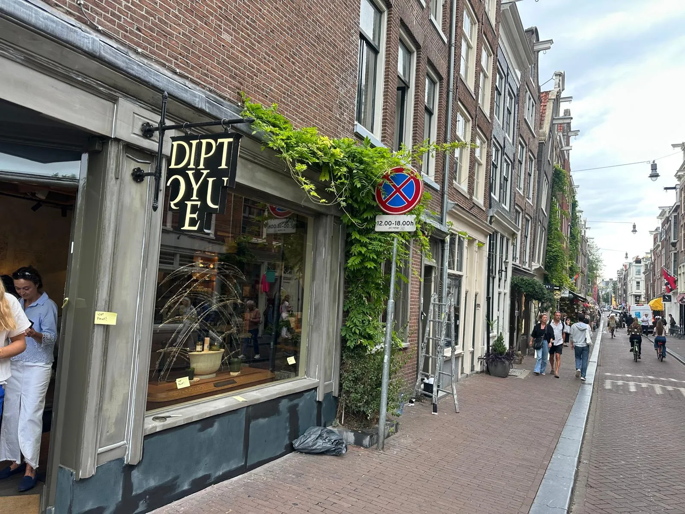
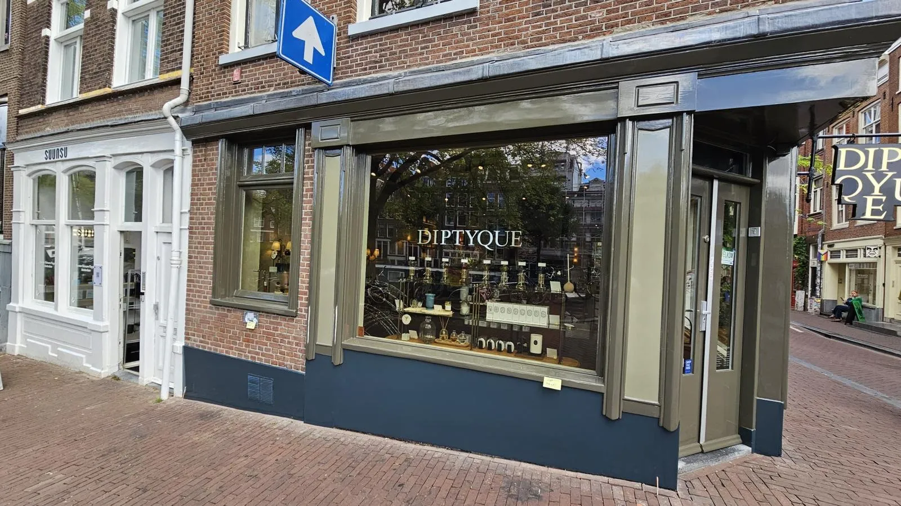
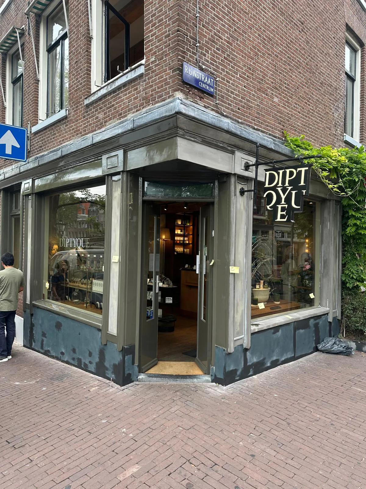
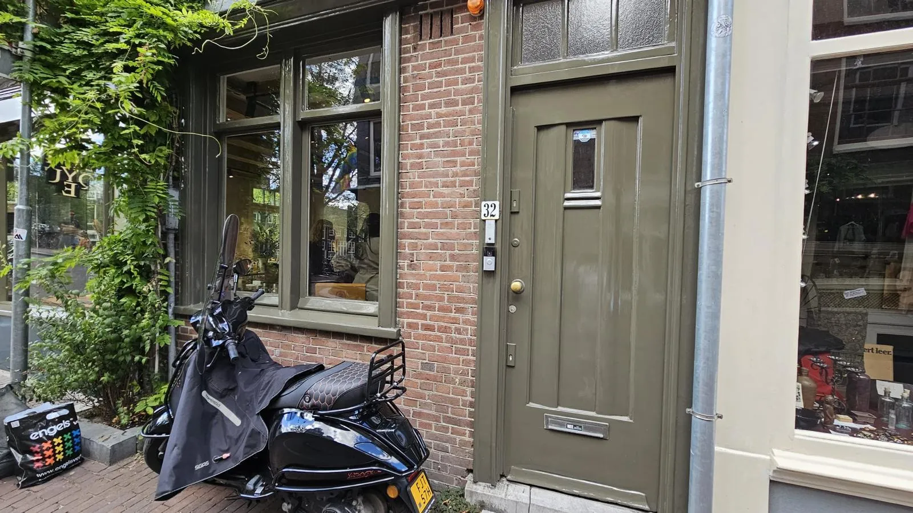
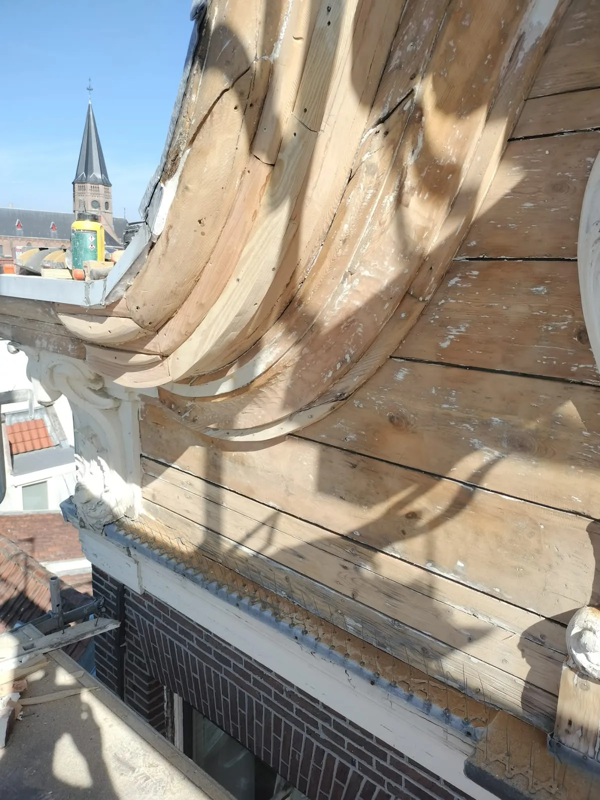
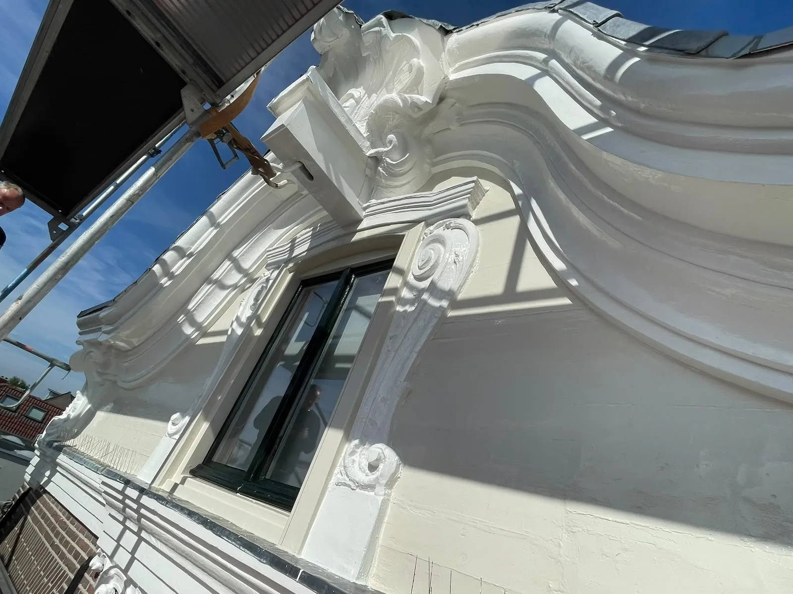
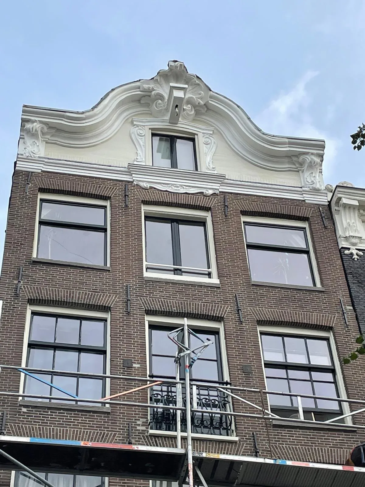
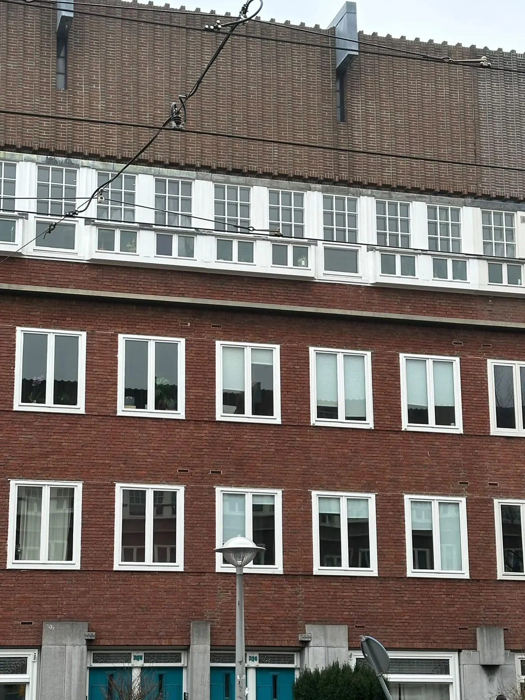
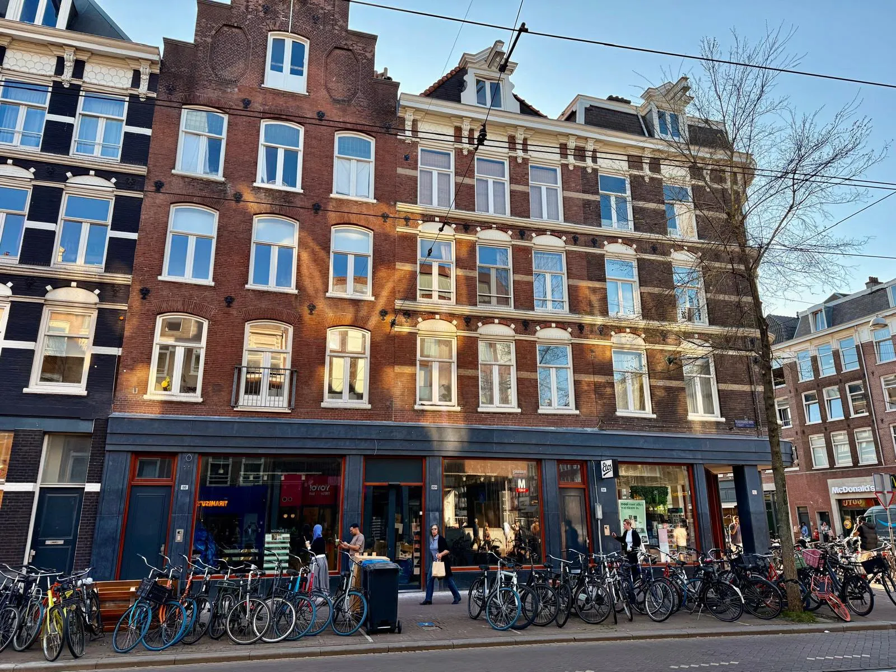

Professioneel schilderwerk en strak stucwerk voor binnen en buiten. Kwaliteit en oog voor detail staan bij ons voorop.
Wij verzorgen professioneel schilderwerk binnen en buiten, voor een strak, duurzaam en verzorgd resultaat. Mensen nemen contact met ons op om advies te krijgen, een duidelijke offerte te ontvangen en hun project zorgeloos te laten realiseren.
Wij verzorgen strak en duurzaam stucwerk voor binnen- en buitengevels. Met oog voor detail en heldere afspraken zorgen wij voor een prachtige afwerking die jarenlang meegaat.












"Wij hebben een uitbouw laten plaatsen en meteen onze gevel laten renoveren aan de Keizersgracht 573 Amsterdam. Alles is perfect uitgevoerd en het huis ziet er weer als nieuw uit. Het team van Van der Meer Dienstengroep werkt netjes en komt afspraken na. Zeker een aanrader!"
"Top aannemersbedrijf! Onze aanbouw en dakwerkzaamheden zijn netjes uitgevoerd. Goede communicatie tijdens het hele project en alles werd netjes opgeleverd. We zijn erg tevreden met het resultaat."
"Voor de renovatie van onze woning hebben we dit bedrijf ingeschakeld. Ze hebben het dak vernieuwd ,ook de gevel aangepakt en alle gevelankers hersteld van schade. Vakmensen die weten wat ze doen."
"Heel blij met onze nieuwe uitbouw aan de zuideinde 277 Oostzaan. Daarnaast hebben ze ook het dak gecontroleerd en kleine reparaties uitgevoerd en een nieuwe afvoergootje geplaatst. Alles werd duidelijk uitgelegd en netjes afgewerkt."
"Betrouwbaar bedrijf met echte vakmensen. Bij ons hebben ze een aanbouw geplaatst en de gevel opnieuw gevoegd. Het resultaat is prachtig."
"Onze dakrenovatie is perfect uitgevoerd. Ze werken snel, netjes en houden zich aan de afspraken. Fijn bedrijf om mee samen te werken."
"Wij hebben onze gevel laten reinigen met de hogedruk en opnieuw laten voegen. Het verschil is enorm. Professioneel, snel team en goede service."
"Tijdens de renovatie van ons huis hebben ze zowel de uitbouw als het dakwerk verzorgd. Alles verliep soepel en het eindresultaat is boven verwachting."
"Heel tevreden over de werkzaamheden aan ons dak en de gevel. Goede prijs-kwaliteitverhouding en duidelijke communicatie."
"Wij raden Van der Meer Dienstengroep zeker aan. Ze hebben bij ons een aanbouw gemaakt en de gevel gerenoveerd aan de Prinsengracht 1051. Alles werd professioneel uitgevoerd."